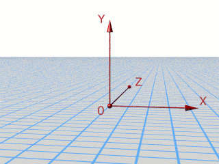
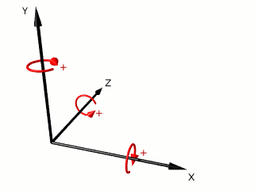

Formation POV #3: Espace
Données de base
Une scène POV se construit dans un espace à trois dimensions X, Y et Z. Elle est constituée d’objets paramétrés essentiellement à partir de nombres (float) et de vecteurs (vector).
Un nombre peut s’écrire 2, -3.14, 1.7e3 (=1700), .012 (équivalent à 0.012, ou encore à 12e-3),…
Un vecteur est une suite de nombres séparés par des virgules, écrite entre
< et >.
Par exemple <2,3.9,.4> et <1,0,0,3.7e6,99> sont des vecteurs.
On utilise surtout des vecteurs de dimension 3, qui permettent de repérer un
point de l’espace par ses coordonnées x, y et z, une couleur par ses
composantes rouge, verte et bleue,…
On peut abbréger un vecteur dont les 3 composantes sont identiques : si l’on
met un nombre a là où POV attend un vecteur, POV comprendra qu’il s’agit du
vecteur
Enfin il existe des vecteurs prédéfinis : x pour <1,0,0>, y pour <0,1,0>
et z pour <0,0,1>.
On peut appliquer un certain nombres de fonctions à ces nombres et à ces
vecteurs.
Les plus courantes sont l’addition et la multiplication : 1+1, 28.03,
3<1,2,3>, x-y/2 (qui vaut <1,-.5,0>), …
Mais il en existe beaucoup d’autres (sections Float Functions et Vector
Functions de la documentation).
Repérage
Comme nous l’avons déjà évoqué, l’espace de POV est muni d’une origine et de
trois axes X, Y et Z (formant une base orthonormée indirecte).
Ainsi la position d’un point est repérée par 3 coordonnées x, y et z. Par
exemple, l’origine se trouve en <0,0,0>.
Imaginons que nous nous retrouvions plongés dans cet espace, et que nous regardiions l’origine. Afin de fixer les idées, nous voyons alors les 3 axes ainsi : l’axe Y part vers le haut ; l’axe X s’en va vers la droite ; enfin Z s’éloigne vers l’horizon :

Transformations
La syntaxe générale d’un objet est :
nom_de_l_objet {paramètres,modificateurs}
Parmi les modificateurs on trouve la texture, certains mots-clefs (par
exemple no_shadow qui supprime l’ombre portée), mais aussi les
transformations.
Elles sont de 4 types : translation, rotation, homothétie, transformation
matricielle, mais cette dernière est en pratique très peu utilisée et nous
n’en parlerons pas plus ici. Les 3 autres s’emploient avec un vecteur de
dimension 3 :
translation (translate)
translate <v> rajoute translate x déplace l’objet d’une unité vers la droite.
homothétie (scale)
scale <sx,sy,sz> transforme chaque point scale <1,2,1> étire l’objet dans le sens de la hauteur.
rotation (rotate)
rotate <rx,ry,rz> fait tourner l’objet de rx degrés autour de X, puis de
ry autour de Y, enfin de rz autour de Z. Ces rotations s’effectuent dans le
sens inverse des aiguilles d’une montre lorsque l’on se met sur l’axe et que
l’on regarde la pointe de la flèche :

On peut mettre autant de transformations que l’on veut les unes à la suite des
autres, mais il faut faire attention à l’ordre dans lequel on les met. Ainsi,
translate x scale 2 n’est pas équivalent à scale 2 translate x (mais à
scale 2 translate 2*x).
Couleur de fond
Si l’on ne crée aucun objet et que l’on regarde quelque part, on voit du noir.
On peut changer cette couleur grâce à la commande background, que l’on peut
placer n’importe où dans le fichier .pov.
Par exemple, pour avoir un fond blanc comme dans l’image ci-dessus (si l’on
utilise White, il faut mettre cette commande après le #include
"colors.inc") :
background {White}